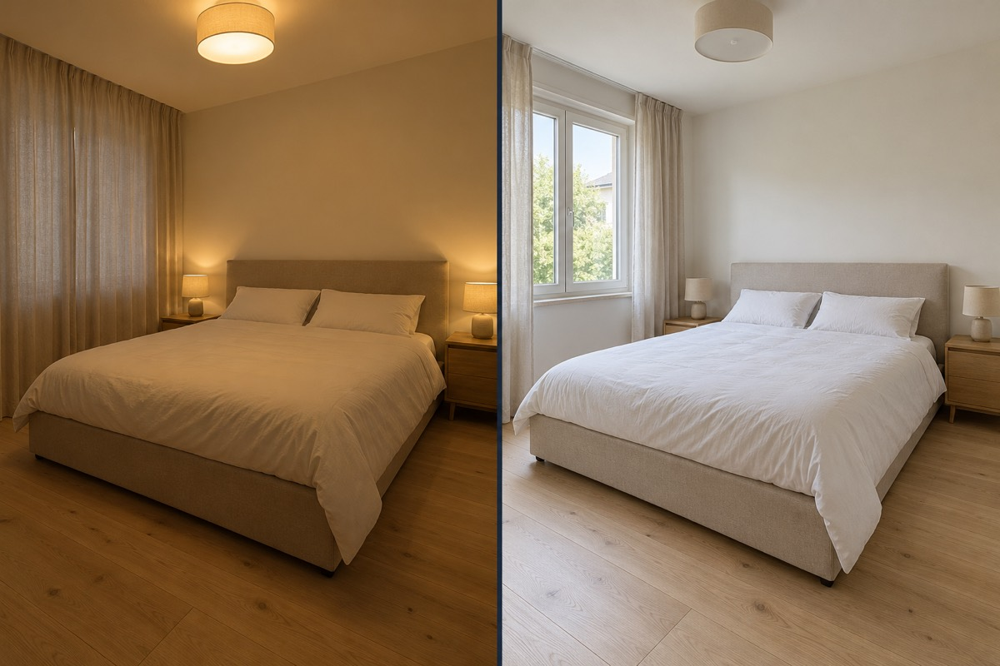

Mostra gli spazi,
con chiarezza.
Le immagini aiutano chi guarda a comprendere gli ambienti. Nel percorso dedicato puoi richiedere all’AI una lista personalizzata di ciò che serve per presentare meglio la casa.
Foto curate, una descrizione chiara, dettagli che contano. Scopri da dove cominciare per presentare meglio la tua proposta di vendita e approfondisci le tue scelte con un consulente.
Richiedi una consulenza gratuita ↗Ricevi la lista via email. Scegli tu se chiedere un confronto.
Le immagini aiutano chi guarda a comprendere gli ambienti. Nel percorso dedicato puoi richiedere all’AI una lista personalizzata di ciò che serve per presentare meglio la casa.
Una descrizione coerente con la casa aiuta a comunicarne le caratteristiche. Il percorso annuncio raccoglie il materiale per una risposta preparata con assistenza AI.
La preparazione comprende informazioni disponibili, materiali mancanti e dubbi da chiarire. La checklist AI serve a organizzare i prossimi passi e arriva via email.
Un trilocale con balcone e una zona giorno da descrivere attraverso le sue caratteristiche reali.
Il confronto dipende dalla casa e dai tuoi obiettivi. Approfondiscilo con un consulente gratuito.

Un esempio visivo di come l’illuminazione cambia la percezione di un ambiente.
| Materiale | Stato |
|---|---|
| Foto degli ambienti | ✓ Raccolte |
| Descrizione della casa | ✓ Abbozzata |
| Planimetria | ○ Da aggiungere |
| Altre informazioni | … Da completare |
La tua lista dipenderà dalle informazioni che invii. Non è un elenco completo dei documenti necessari alla vendita.
Foto buie o confuse possono far passare oltre il tuo annuncio, prima ancora di conoscere la casa.
Dettagli mancanti o poco chiari possono generare domande aggiuntive e incomprensioni.
Informazioni e materiali da recuperare all’ultimo momento possono richiedere di correggere l’annuncio e riorganizzare i prossimi passi.
Come presentarla, quali aspetti approfondire e come ragionare sul prezzo che hai in mente: porta le tue domande al nostro consulente.
Puoi richiedere un primo confronto gratuito nel percorso più adatto alla tua situazione. La disponibilità viene confermata via email.